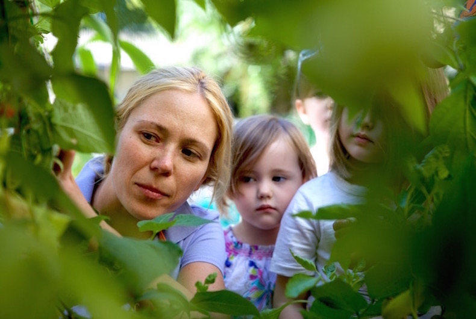
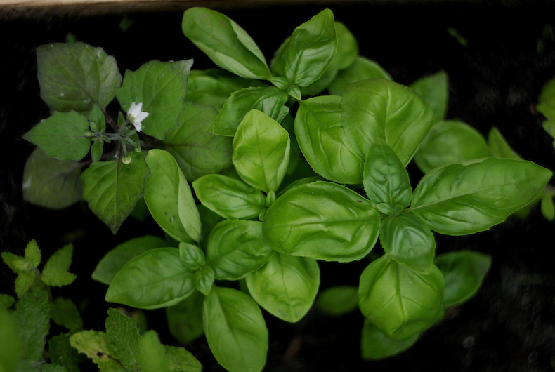

Привіт! Ми – освітня платформа Kyiv Farm, що вчить киян як використовувати закинуті майданчки і вирощувати на них рослинну їжу
Agritecture
We establish microgardens in urban environment to maximize plant growth using the benefits of density indoors and microclimates outdoors.
Civic Education
We expand edible urban gardens in Ukraine through education programs – annual Urban Farming Course and summer school for kids.
Advocacy
We cooperate with city authorities on programs to support urban gardening, food sovereignty and local farmers.


Як створити свій город?
Простір
Подумайте про створення городу в громадському просторі – у спільному подвір'ї багатоповерхівки або в затишному сквері. А як щодо віконних боксів, контейнерів на балконах і навіть дахів будинків?
Матриця рослин
Створіть матрицю рослин, яка найбільше підходять вашій місцевості. Зосередьтеся на овочах, зелені, фруктах, які ви їсте регулярно, щоб зробити найбільшу економію. Почніть з рослин, які легко вирощувати.
Витратні матеріали
Заздалегідь до старту сезону подбайте про насіння та садженці від локальних фермерів. Не забудьте про ґрунт, торфосуміші та гумус для кращого врожаю та результату.
Навчання і любов до справи
Поки ви чекаєте теплих весняних днів, щоб нарешті засіяти свою грядку, не гайте часу. Читайте матеріали про екологічне фермерство, здорові ґрунти, локальне насіння, місцеві громадські сади.